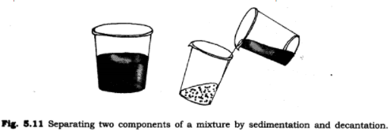
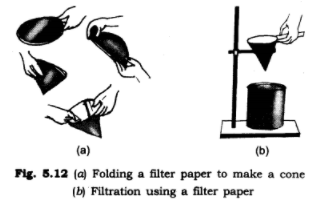

all ex and ques/ans is avlable in wedsite of ncert
1. Why do we need to separate different components of a mixture? Give two examples.
Ans: Among different components of mixture there are many substances which are harmful or not useful for us. To remove these harmful or unuseful components we need to separate them. For example:
(a) Tea leaves are separated from the liquid with a strainer while preparing tea.
(b) Stone pieces from wheat, rice or pulses are picked out by hand.
2. What is winnowing? Where is it used?
Ans: Winnowing is used to separate heavier and lighter components of a mixture by wind or by blowing air. This process is used by farmers to separate lighter husk particles from heavier seeds of grain.
3. How will you separate husk or dirt particles from a given sample of pulses before cooking?
Ans: Husk or dirt particles can be separated by winnowing, being lighter they wall fly away from pulses.
4. What is Sieving? Where can it be used?
Ans. Sieving is a process by which fine particles are separated from bigger particles by using a sieve. It is used in flour mill or at construction sites. In flour mill, impurities like husks and stones are removed from wheat. Pebbles and stones are removed from sand by sieving.
5. How will you separate sand and water from their mixture?
Ans. We will separate sand and water by sedimentation and decantation method. First we leave this mixture for some time. After some time, the sand which is; heavier is settled down at the bottom. After that we wall pour water into another container and the mixture will be separated.

6. Is it possible to separate sugar mixed with wheat flour? If yes, how will you do it?
Ans. Sugar can be separated from wheat flour by sieving. Due to difference in the size of particles, sugar will stay on sieve and wheat flour will pass through it.
7. How would you obtain clear water from a sample of muddy water?
Ans. We will obtain clear water from a sample of muddy water by the process of filtration.
A filter paper is one such filter that has very fine pores in it. Figure 5.12(a, b) shows the steps involved in using a filter paper. A filter paper folded in the form of a cone is fixed in a funnel. The mixture is then poured on the filter paper. Solid particles in the mixture do not pass through it and remain on the filter.

8. Fill in the blanks:
(a) The method of separating seeds of paddy from its stalks is called .
(b) When milk, cooled after boiling, is poured onto a piece of cloth the cream (malai) is left behind on it. This process of separating cream from milk is an example of ______.
(a) Salt is obtained from sea water by the process of ____________ .
(b) Impurities settled at the bottom when muddy water was kept overnight in a bucket. The clear water was then poured off from the top. The process of separation used in this example is called ____________.
Ans.
(a) threshing
(b)filtration
(b) evaporation
(d) sedimentation and decantation
9. True or false?
(a) A mixture of milk and water can be separated by filtration.
(b) A mixture of powdered salt and sugar can be separated by the process of winnowing.
(c) Separation of sugar from tea can be done with filtration.
(d) Grain and husk can be separated with the process of decantation.
Ans.
(a) False
(b) False
(c) False
(d) False
10. Lemonade is prepared by mixing lemon juice and sugar in water. You wish to add ice to cool it. Should you add ice to the lemonade before or after dissolving sugar ? In which case would it be possible to dissolve more sugar ?
Ans. We should add ice after dissolving sugar. When the temperature is high then more sugar can be dissolved. After mixing ice it gets cool and less sugar will dissolve in it.